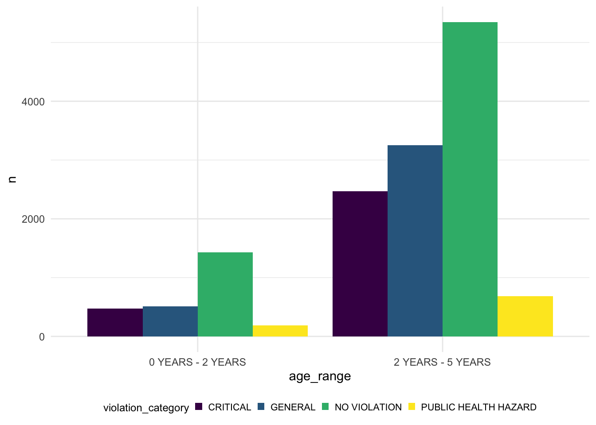
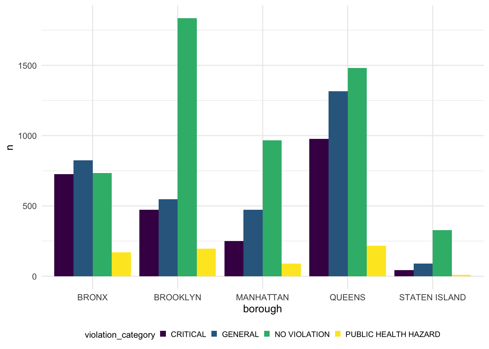

Nowadays, children care center become a worldwide popular topic due to increasing working parents. Most working parents send their child to children care center during work time. In a high demand of request, selecting a safe and healthy children care environment is important. However, some children care center still has severe safety and hygiene issues which NYC government classify them as violation according to their severity level. In this research, we are trying to investigate the violation in children care center in NYC based on the NYC Open data set for predicting occurrence of violation based on multiple socioeconomic variables.
Our initial question focuses on how socioeconomics factors are related to childcare violation in New York. We investigated multiple factors such as borough and childcare type to create a more lucid analysis of occurrence of childcare violation. Specifically, we evaluates borough with high occurrence of violation and childcare types for which most violation occurs. Further details related to the study will be presented in other parts of the websites.
We filter the variables to include currently permitted Children Care Center
For the next step,we remove the useless variables: legal_name, building, street, phone, permit_number, permid_expiration, day care id, url, date_permitted, actual. In addition, we filter out the program type ALL AGE CAMP which has only three data for further lucidification during data analysis.
library(tidyverse)## ── Attaching packages ─────────────────────────────────────── tidyverse 1.3.2 ──
## ✔ ggplot2 3.3.6 ✔ purrr 0.3.4
## ✔ tibble 3.1.8 ✔ dplyr 1.0.10
## ✔ tidyr 1.2.0 ✔ stringr 1.4.1
## ✔ readr 2.1.2 ✔ forcats 0.5.2
## ── Conflicts ────────────────────────────────────────── tidyverse_conflicts() ──
## ✖ dplyr::filter() masks stats::filter()
## ✖ dplyr::lag() masks stats::lag()library(patchwork)
library(plotly)##
## Attaching package: 'plotly'
##
## The following object is masked from 'package:ggplot2':
##
## last_plot
##
## The following object is masked from 'package:stats':
##
## filter
##
## The following object is masked from 'package:graphics':
##
## layoutlibrary(haven)
library(viridis)## Loading required package: viridisLitelibrary(data.table)##
## Attaching package: 'data.table'
##
## The following objects are masked from 'package:dplyr':
##
## between, first, last
##
## The following object is masked from 'package:purrr':
##
## transposeoptions(
ggplot2.continuous.colour = "viridis",
ggplot2.continuous.fill = "viridis"
)
theme_set(theme_minimal() + theme(legend.position = "bottom",
legend.text = element_text(size = 8),
legend.title = element_text(size = 9),
legend.key.size = unit(.5,"line")))
options(
ggplot2.continuous.colour = "viridis",
ggplot2.continuous.fill = "viridis"
)
scale_colour_discrete = scale_colour_viridis_d
scale_fill_discrete = scale_fill_viridis_dIn order to illustrate association between age range, program type and violation category. We plotted multiple graphs below.
### Age Range vs Violation Category
Childcare_center %>%
group_by(age_range) %>%
count(violation_category) %>%
ggplot(aes(fill =violation_category, x=age_range,y = n))+
geom_bar(position = "dodge", stat = "identity")
Age range is the same as the program type violation.(graph below)
### Program Type vs Violation Category
Childcare_center %>%
group_by(program_type) %>%
count(violation_category) %>%
ggplot(aes(fill =violation_category, x=program_type,y = n))+
geom_bar(position = "dodge", stat = "identity")After analysing the data we found that the age-range and program type relationship is the same. Infant school is for 0-2 years kids and preschool is for 0-5 years kids. The graph above showing the relationship between the program type (Preschool&Infant Toddler) and the violation category cases(Critial, General, No Violation and Public Health Hazrd). As we can see from the graph, preschool has a higher violation cases in the categoy “public health hazard”, “general” and “critical” than the Infant todddler program type. And in three violation categories, the “general” cases is higher then the other two.
Borough is another significant geographical factor for analyzing violation. We examine connection between borough and violations.
We examined the inspection categories of child care centers in different areas of New York that had records of violations，We found that the categories of inspection are divided into four major categories, which are Compliance Inspection of Open Violations, Initial Annual Inspection, Lead Based Paint or Lead in Water Inspection, Monitoring Inspection Non-Routine.
### Borough vs. Inspection summary result
borough_inspec_summmary<-
Childcare_center%>%
select(borough,inspection_summary_result)%>%
drop_na(inspection_summary_result)%>%
group_by(borough,inspection_summary_result)%>%
summarise(
n_obs=n()
)%>%
mutate(
general_category=case_when(
inspection_summary_result %like% "^Compliance Inspection of Open Violations" ~"Compliance Inspection of Open Violations",
inspection_summary_result %like% "^Initial Annual Inspection" ~"Initial Annual Inspection",
inspection_summary_result %like% "^Lead Based Paint or Lead in Water Inspection" ~"Lead Based Paint or Lead in Water Inspection",
inspection_summary_result %like% "^Monitoring Inspection Non-Routine" ~"Monitoring Inspection Non-Routine")
)
head(borough_inspec_summmary)## # A tibble: 6 × 4
## # Groups: borough [1]
## borough inspection_summary_result n_obs gener…¹
## <chr> <chr> <int> <chr>
## 1 BRONX Compliance Inspection of Open Violations - Passed inspe… 96 Compli…
## 2 BRONX Compliance Inspection of Open Violations - Previously c… 29 Compli…
## 3 BRONX Compliance Inspection of Open Violations - Previously c… 3 Compli…
## 4 BRONX Compliance Inspection of Open Violations - Reinspection… 48 Compli…
## 5 BRONX Compliance Inspection of Open Violations - Reinspection… 94 Compli…
## 6 BRONX Compliance Inspection of Open Violations - Reinspection… 92 Compli…
## # … with abbreviated variable name ¹general_categoryTo better examine the number of violations in different types of inspections at child care centers in different borough of New York, we categorized and summarise the records of violation inspections by borough and type of inspection.
### Borough group by General Category
borough_inspec_general_sumary<-
borough_inspec_summmary%>%
group_by(borough,general_category)%>%
summarise(
n_obs=sum(n_obs)
) %>%
arrange(desc(n_obs))
borough_inspec_general_sumary## # A tibble: 19 × 3
## # Groups: borough [5]
## borough general_category n_obs
## <chr> <chr> <int>
## 1 QUEENS Initial Annual Inspection 3208
## 2 BROOKLYN Initial Annual Inspection 2852
## 3 MANHATTAN Initial Annual Inspection 1687
## 4 BRONX Initial Annual Inspection 1586
## 5 BRONX Compliance Inspection of Open Violations 521
## 6 MANHATTAN Monitoring Inspection Non-Routine 468
## 7 BROOKLYN Compliance Inspection of Open Violations 457
## 8 STATEN ISLAND Initial Annual Inspection 401
## 9 QUEENS Compliance Inspection of Open Violations 390
## 10 BROOKLYN Monitoring Inspection Non-Routine 301
## 11 BRONX Monitoring Inspection Non-Routine 284
## 12 QUEENS Monitoring Inspection Non-Routine 249
## 13 STATEN ISLAND Monitoring Inspection Non-Routine 141
## 14 MANHATTAN Compliance Inspection of Open Violations 68
## 15 STATEN ISLAND Compliance Inspection of Open Violations 32
## 16 BRONX Lead Based Paint or Lead in Water Inspection 10
## 17 BROOKLYN Lead Based Paint or Lead in Water Inspection 10
## 18 MANHATTAN Lead Based Paint or Lead in Water Inspection 6
## 19 QUEENS Lead Based Paint or Lead in Water Inspection 5We also created the following chart by type of inspection and the number of violations recorded. We found that New York’s child care centers had the highest number of violations in the intial annual inspection, far exceeding the other three types of violations combined, with the Queen’s district having the highest number of violations at 3,600 records. In contrast, Lead Based Paint or Lead in Water Inspection had the least number of violations, with bronx having ten records, Brooklyn having eleven records, Manhattan having six records, queens having five records, and staten island not even having this type of record.
borough_inspec_general_sumary_plot_all<-
borough_inspec_general_sumary%>%
ggplot(aes(x=general_category,y=n_obs),)+
geom_bar(aes(fill = borough), stat = "identity")+
theme(axis.text.x = element_text(size=10, angle=45, hjust = 1))+
labs(y="number of violations",title="Inspection categories vs. Borough",x="inspection categories")
ggplotly(borough_inspec_general_sumary_plot_all)### General Type vs Borough
inspec_general_borough_sumary<-
borough_inspec_summmary%>%
group_by(general_category,borough)%>%
summarise(
n_obs=sum(n_obs)
) %>%
arrange(desc(n_obs))
inspec_general_borough_sumary## # A tibble: 19 × 3
## # Groups: general_category [4]
## general_category borough n_obs
## <chr> <chr> <int>
## 1 Initial Annual Inspection QUEENS 3208
## 2 Initial Annual Inspection BROOKLYN 2852
## 3 Initial Annual Inspection MANHATTAN 1687
## 4 Initial Annual Inspection BRONX 1586
## 5 Compliance Inspection of Open Violations BRONX 521
## 6 Monitoring Inspection Non-Routine MANHATTAN 468
## 7 Compliance Inspection of Open Violations BROOKLYN 457
## 8 Initial Annual Inspection STATEN ISLAND 401
## 9 Compliance Inspection of Open Violations QUEENS 390
## 10 Monitoring Inspection Non-Routine BROOKLYN 301
## 11 Monitoring Inspection Non-Routine BRONX 284
## 12 Monitoring Inspection Non-Routine QUEENS 249
## 13 Monitoring Inspection Non-Routine STATEN ISLAND 141
## 14 Compliance Inspection of Open Violations MANHATTAN 68
## 15 Compliance Inspection of Open Violations STATEN ISLAND 32
## 16 Lead Based Paint or Lead in Water Inspection BRONX 10
## 17 Lead Based Paint or Lead in Water Inspection BROOKLYN 10
## 18 Lead Based Paint or Lead in Water Inspection MANHATTAN 6
## 19 Lead Based Paint or Lead in Water Inspection QUEENS 5The following chart can better understand the violation situation of different Boroughs in New York. We can see that queens has the most violation records, Brooklyn has less violation records than queens but still far more than bronx and Manhattan, and staten island has the least violation records.
violation_borough_sumary_all<-
inspec_general_borough_sumary%>%
ggplot(aes(x=borough,y=n_obs))+
geom_bar(aes(fill=general_category),stat = "identity")+
theme(axis.text.x = element_text(size=10, angle=45, hjust = 1))+
labs(y="number of violations",title="Borough vs.Inspection categories",x="borough")
ggplotly(violation_borough_sumary_all)### Borough vs Violation Category
Childcare_center %>%
mutate(violation_category = ifelse(is.na(violation_category), "NO VIOLATION", violation_category)) %>%
group_by(borough, age_range) %>%
count(violation_category) %>%
ggplot(aes(fill =violation_category, x=borough,y = n))+
geom_bar(position = "dodge", stat = "identity")
The graph above showing the relationship between the borough and the cases of violation in each category. From the grpah we can see, queens is the borough whihc has the most violation cases in all three categories and staten island has the least violation cases in all three categories. And in Brooklyn, it has the highest no violation cases.
# try
try = Childcare_center %>%
mutate(violation_category = ifelse(is.na(violation_category), "NO VIOLATION", violation_category)) %>%
select(borough,program_type,violation_category)%>%
filter(program_type!="CAMP")%>%
group_by(borough, program_type,violation_category) %>%
summarise(
n_obs=n())%>%
ggplot(aes(x = borough, y = n_obs, fill = violation_category))+
geom_bar(stat="identity", width = 0.5, position = "dodge")+
facet_grid(. ~ program_type) +
theme_bw() +
theme(axis.text.x = element_text(angle = 28),axis.text = element_text(size = 5))
ggplotly(try) The graph above is showing the relationship between borough and the number of violation category count in two different program types. The borough can separate the five parts “Bronx”, “Brooklyn”, “Manhattan”, “Staten Island” and “Queens”. Violation category can be separate “Critical”, “General”, “No Violation” and “Public Helath Hazard”. Combining two graphs, pre school will have a higher violation cases in each borough in overall. In infant toddler, Brooklyn is the borough that having the largest violation cases.But in preschool, queens is the borough that having the largest cases. Staten island has the smallest cases in both preschool and infant toddler. Footer
Chi-squared test and ANOVA are conducted to examine significance of variable borough and program types for predicting violation occurrence.
program type and violation category to test the association between the two variables.
H0:There is no association between program type and violation category
H1:There is association between program type and violation category
tbl1=table(Childcare_center$borough,Childcare_center$violation_category)
chisq.test(tbl1)##
## Pearson's Chi-squared test
##
## data: tbl1
## X-squared = 999.29, df = 12, p-value < 2.2e-16chisq.test(tbl1)%>%
broom::tidy() %>%
knitr::kable()| statistic | p.value | parameter | method |
|---|---|---|---|
| 999.2946 | 0 | 12 | Pearson’s Chi-squared test |
There is significant relationship between program type and violation category suggested by the computed p-value much lower than 0.05
We conducted a chi-squared test between childcare type and violation category to test the association between the two variables.
H0:There is no association between childcare type and violation category
H1:There is association between childcare type and violation category
tbl2=table(Childcare_center$child_care_type,Childcare_center$violation_category)
chisq.test(tbl2)##
## Pearson's Chi-squared test
##
## data: tbl2
## X-squared = 111.01, df = 3, p-value < 2.2e-16chisq.test(tbl2) %>%
broom::tidy() %>%
knitr::kable()| statistic | p.value | parameter | method |
|---|---|---|---|
| 111.0138 | 0 | 3 | Pearson’s Chi-squared test |
There is significant relationship between childcare type and violation category suggested by the computed p-value much lower than 0.05
We want to examining the relationship between the mean of total violation event (GENERAL+CRITICAL+PUBLIC HEALTH HAZARD) and borough. The frequency of violation events were separated by five boroughs (Manhattan, Brooklyn, Queens, Staten Island, Bronx).
H0: The mean of violation are not different across borough
H1: The mean of violation are different across borough
clean_1 = children_center<-
raw_data%>%
janitor::clean_names()%>%
mutate(
center_name=tolower(center_name),
center_name=gsub('[[:punct:] ]+',' ',center_name),
center_name=gsub(" ","",center_name),
center_name=gsub("llc","",center_name),
center_name=gsub("inc","",center_name),
center_name=gsub("th","",center_name),
center_name=gsub("school","",center_name),
center_name=gsub("center","",center_name),
center_name=gsub("ctr","",center_name)
)%>%
filter(status=="Permitted") %>%
mutate(borough = as.factor(borough), program_type = as.factor(program_type)) %>%
filter(violation_category != "NO VIOLATION") %>%
mutate(violation_category = "VIOLATION") %>%
group_by(center_name,borough) %>%
count()
fit = lm(n~ borough, data = clean_1)
anova(fit) %>%
knitr::kable(caption = "One way anova of Violation frequency and Brough")| Df | Sum Sq | Mean Sq | F value | Pr(>F) | |
|---|---|---|---|---|---|
| borough | 4 | 15688.56 | 3922.141 | 25.89965 | 0 |
| Residuals | 985 | 149164.49 | 151.436 | NA | NA |
The p-value is very small(p<0.05). We reject the null hypothesis and saying that there is enough evidence the mean of violation are different across borough.
After validating the significance of age range and program type, we constructed a logistics regression model for predicting violation occurrence.
To predict whether a childcare facility will violate or not, we fit the data to a logistic regression model.
Our model is shown below:
# New dataset for modelling
childcare_model <- Childcare_center %>%
mutate(violation_category = ifelse(violation_category == "NO VIOLATION", 0, 1),
borough = as.factor(borough)) %>% # 0 is no liolation, 1 is with violation
select(borough,child_care_type,total_educational_workers,maximum_capacity, violation_category)
# fit logistic reg
logistic_model = childcare_model %>%
glm(violation_category ~ borough + child_care_type + maximum_capacity, data = ., family = binomial()) %>%
broom::tidy() %>%
knitr::kable(caption = "Effect of Predictors on Violation Status")
logistic_model| term | estimate | std.error | statistic | p.value |
|---|---|---|---|---|
| (Intercept) | 0.4692795 | 0.0559961 | 8.380571 | 0.0000000 |
| boroughBROOKLYN | -1.1458556 | 0.0514892 | -22.254278 | 0.0000000 |
| boroughMANHATTAN | -1.0180213 | 0.0580792 | -17.528165 | 0.0000000 |
| boroughQUEENS | -0.3377869 | 0.0502914 | -6.716594 | 0.0000000 |
| boroughSTATEN ISLAND | -1.6359735 | 0.0995010 | -16.441776 | 0.0000000 |
| child_care_typeChild Care - Pre School | 0.1660567 | 0.0488473 | 3.399506 | 0.0006751 |
| maximum_capacity | 0.0023471 | 0.0003790 | 6.192338 | 0.0000000 |
As we can see in the summary, all predictors are significant with p value < 0.01, suggesting association with violation status. Different borough has different coefficients, suggesting regional difference in violation status. The odds of violation for childcare center in Bronx is 0.469, holding all other variables constant.For each of the other borough, the coefficient tells us that the log-odds of violation for a given group is smaller than that of the reference group.
We also used a simple method to test our model accuracy.Firstly, I split our dataset to training and testing dataset, and then fit the model using the training data, and test for accuracy using testing data. Lastly, I used confusion matrix to access our logistic model.
library(rsample) # for data splitting
# Modeling packages
library(caret) # for logistic regression modeling
# Model interpretability packages
library(vip) # variable importance
childcare_split <- initial_split(childcare_model, prop = .7)
childcare_train <- training(childcare_split)
childcare_test <- testing(childcare_split)
set.seed(123)
# predict violation using model
# fit logistic reg
logistic_model_train = childcare_train %>%
glm(violation_category ~ borough + child_care_type + maximum_capacity, data = ., family = binomial())
logistics_predict = predict(logistic_model_train, childcare_test, type = 'response')
# convert predicted value to TRUE/FALSE
childcare_test$predict_violation = ifelse(logistics_predict >= .5, 1, 0)
# Used confusion matrix to measure model performance
confusion_data = childcare_test %>%
select(predict_violation, violation_category) %>%
mutate(predict_violation = as.factor(predict_violation),
violation_category = as.factor(violation_category))
confusionMatrix(data=confusion_data$predict_violation, reference = confusion_data$violation_category) %>%
broom::tidy() %>%
select(term, estimate) %>%
filter(term %in% c("accuracy", "kappa", "sensitivity", "specificity", "f1")) %>%
knitr::kable(caption = "Measuring Model Performance ")| term | estimate |
|---|---|
| accuracy | 0.6236934 |
| kappa | 0.2458492 |
| sensitivity | 0.6009662 |
| specificity | 0.6447427 |
| f1 | 0.6056475 |
It turns out that our model has accuracy rate of 62%, with Kappa coefficient at around 0.24. This means that the predictability of our model is relatively week. But the significance of our predictors indicating that borough, childcare types and maximum capacity are all associated with violation. The reason behind regional disparities in violation should be investigated in the future.
The main reason for our weak predictability is that we lack of essential predictors for the model. Combined with the top 10 violation summary we analyzed before, useful information may include: hours of training, celling and floor maintance frequecny, stuff medical clearance status, etc.
Although relatively weak predictability is observed for this logistic regression model with accuracy rate of 62% and Kappa coefficient at around 0.24, it is suggested that borough, childcare type and maximum capacity are all connected with violation and could potentially be estimators of violation occurrence. Aiming at constructing a more accurate model, more related variables should be taken into consideration to refine violation prediction.